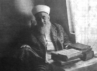

MEHMED ZÂHÝD KOTKU (RH.A) HAZRETLERÝ'NÝN KISA TERCEME-Ý HÂLÝ

Müellif Rahmetullàhi Aleyh'in adý Mehmed Zâhid, soyadý Kotku idi. Kendisinin naklettiðine göre babasý ona: "Oðlum Mehemmed!" diye hitap edermiþ. Soyadýnýn "mütevâzi" mânâsýna geldiði nüfus cüzdanýnýn baþýna not edilmiþ idi.
Tevellüdü 1315 hicrî kamerî (rûmî 1313, milâdî 1897) yýlýnda Bursa þehrinde, kale içinde Türkmenzâde Çýkmazý'ndaki baba evinde vâki olmuþtur.
a. Ailesi
Baba ve annesi Kafkasya'dan 1297'de göç eden müslümanlardandýr. Dedeleri Kafkasya'da Þirvan'a baðlý eski bir hanlýk merkezi olan Nuha'dandýr ki burasý dað eteðinde, ipekçilikle meþhur, ahalisi müslüman, hâlen Azerî Türkçesi konuþulan bir yerdir.
Babasý Ýbrahim Efendi Bursa'ya 16 yaþlarýnda iken gelmiþ, Hamza Bey Medresesi'nde tahsil görmüþ, muhtelif yerlerde imamlýk yapmýþ, Hazret-i Peygamber SAS sülâlesinden bir seyyid'dir. 1929'larda 76 yaþlarýnda iken Bursa ovasýndaki Ýzvat Köyü'nde vefat etmiþ ve oraya defnolunmuþ, ehl-i tarîk bir kimsedir.
Annesi Sabîre Haným, Mehmed Zâhid Efendi 3 yaþlarýnda iken vefat etmiþ, Pýnarbaþý Kabristaný'na gömülmüþtür.
Bu anne ve babadan doðma aðabeyi Ahmed Þâkir (1308 - 1335) subaylýk yapmýþ, Kudüs'te Çanakkale'de bulunmuþ, siperlerde hastalanmýþ ve 28 yaþlarýnda iken vefat edip Söðütlüçeþme'ye defn olunmuþtur. Ayný anneden bir küçük kardeþi daha olmuþsa da çok yaþamamýþ birkaç aylýk iken vefat etmiþtir.
Babasýnýn ikinci evliliði yine Daðýstan muhacirlerinden, Fatma Haným'la olmuþtur. Ondan doðma üç kýz kardeþ halen hayattadýrlar. [1981] Bunlardan Pakize Haným'ýn efendisi de, Bursa Ulu Cami imamlarýndan ve Ýsmail Hakký Tekkesi þeyhlerinden merhum Ahmet Efendi (K.S)'dir.
b. Tahsili, Askerliði
Mehmed Zâhid Efendi (Rh.A) ilk mektebi Oruç Bey Ýbtidâîsi'nde okudu, Maksem'deki idâdîye devam etti. Sonra Bursa Sanat Mektebi'ne girdi. Bu esnada Birinci Cihan Harbi dolayýsýyla 18 yaþlarýnda askere celb olundu. 14 Nisan 1332'de asker oldu, senelerce askerlik yaptý, çok tehlikeli günler geçirdi, hastalýklar atlattý. Ordunun Suriye'den çekilmesinden sonra, binbir güçlükle Ýstanbul'a döndü.
10 Temmuz 1335'de Cuma gününden itibaren de 25 K. 30 þubede yazýcý olarak vazifeye devam etti. Kendi hatýra defteri kayýtlarýndan 1338 Martlarýnda henüz bu vazifede olduðu görülüyor.
c. Tasavvufî Yetiþmesi ve Dinî Hizmetleri
Ýstanbul'da bulunduðu esnada çeþitli dini toplantýlara, derslere, camilerdeki vaazlara devam etti. Bilhassa Seydiþehirli Abdullah Feyzi Efendi'yi çok sevdiði anlaþýlýyor. Bu arada 16 Temmuz 1336 Cuma günü namazý Ayasofya Camii'nde edadan sonra Vilayet önünde bulunan Fatma Sultan Camii yanýndaki Gümüþhâneli Tekkesi'ne giderek Þeyh Ömer Ziyâeddin Efendi'ye intisâb eyledi. Günden güne ahvâlini terakki ettirdi.
Bu zât-ý þerifin, 18 Kasým 1337 Cuma günü vefatýndan sonra postniþin-i irþâd olan Tekirdaðlý Mustafa Feyzi Efendi'nin yanýnda tahsil-i kemâlâta devam etmiþ, müteaddit defalar halvete girmiþ, 27 yaþlarýnda hilâfetnâmeyi aldýktan sonra ondan Râmuzü'l-Ehadis, Hizb-i A'zam ve Delâilü'l-hayrât icâzetnâmelerini de almýþ, Bayezit, Fatih ve Ayasofya Camii ve medrese-lerinde derslere devam etmiþ, bu esnada hafýzlýðýný da tamamlamýþtýr. Bu aralarda hocasýnýn iþareti üzere muhtelif kasaba ve köylerde dini hizmet ifâ etmiþtir.
Tekkelerin kapatýlmasýndan sonra Bursa'ya dönmüþ, evlenmiþ, 1929'da vefat eden babasý yerine Bursa ovasýndaki Ýzvat Köyü'nde 15-16 sene kadar imamlýk ettikten sonra Üftade Cami-i Þerifi'nin imam-hatipliðine tayin edilerek þehirde hisar içindeki baba evine yerleþti. Burada 1945-46'dan 1952'ye kadar hizmet eyledi.
1952 Aralýðýnda Gümüþhaneli Dergâhý postniþini ve eski tekke arkadaþý Kazanlý Abdülaziz Bekkine'nin vefatý üzerine, Ýstanbul'a nakl olarak Fatih'te bulvara nazýr Ümmügülsüm Mescidi'nde vazife gördü.
1.10.1958 tarihinde Fatih Ýskenderpaþa Camii Þerifi'ne nakloldu ve vefatýna kadar bu vazifede kaldý.
d. Vefatý
Mehmed Zâhid Efendi (Rh.A), ömrünün son yýllarýnda rahatsýz idi; ayakta gezmesine raðmen; þiddetli aðrýlarýndan muzdaribdi. 1979 yazýnda uzun zaman kalmak üzere gittiði Hicaz'dan, aðýr hasta olarak 1980 Þubatý'nda dönmek zorunda kalmýþtý. 7 Mart 1980'de ameliyata girdi ve midesinin üçte ikisi alýndý.
Ameliyattan sonra tedricen düzeldi, hatta 1980 Ramazaný'nda hiç aksatmadan oruç tuttu. Hatimle teravih kýldý, vaaz etti, yazýn Balýkesir Ilýca'ya, Çanakkale Ayvacýk sahiline aðrýyan ayaklarý için götürüldü, hac mevsimi gelince de Hicaz'a gitti. Fakat ameliyata sebep olan rahatsýzlýðý nüks etmiþ ve aðrýlar tekrar baþlamýþtý. Haccý güçlükle ifadan sonra, 6 Kasým 1980'de çok aðýr hasta olarak Ýstanbul'a döndü. Tam bir hafta sonra 13 Kasým 1980'de (5 Muharrem 1401), Perþembe günü öðleye yakýn, dualar, Yâsin'ler, tesbih ve gözyaþlarý ile uyur gibi bir halde iken ahirete irtihal eyledi.
Cenaze namazý 14 Kasým 1980 Cuma günü Ýstanbul Süleymaniye Camii'nde muhteþem, mahzun, vakur ve edepli bir cemm-i gafir tarafýndan kýlýnarak, mübarek vücudu, Kanûnî Süleyman Türbesi arkasýnda, kendisinden feyz aldýðý hocalarý ve üstadlarýnýn yanýndaki istirahatgâhýna defnolundu.
Bu esnada Süleymaniye, Þehzadebaþý, Fatih ve çevrelerinde trafik durmuþ, Süleymaniye'nin içi ve avlusu kâmilen dolduðu gibi, cemaat sokaklara taþarak Esnaf Hastahanesi'nin yanýna kadar uzanmýþtý. Vefatýný duyanlar içinde Anadolu'nun en uzak þehirlerinden olduðu kadar Avrupa'dan gelenler de vardý. Uzakta bulunan muhiblerinden çoðu da vaktinde haber alamama yüzünden cenazesine yetiþememiþlerdi.
Vefatý Ýslâm Alemi'nde de büyük üzüntüye yol açmýþ, Suudi Arabistan'da, Kâbe'de, Kuveyt'te ve daha baþka þehirlerde gýyabýnda cenaze namazý kýlýnýp, dualar edilmiþ, ajanslar bu elim vefat haberini yayýnlamýþlardý.
Vefat tarihi olan 13 Kasým 1980 tarihli takvim yapraklarýnda tevâfukan çok mânidar ibareler yer alýyordu. Meselâ bunlarýn birindeki þu parça ne kadar þâyân-ý taaccübdür:
Arkamdan Aðlama
Öldüðüm gün tabutum yürüyünce
Bende bu dünya derdi var sanma!
Bana aðlama, "Yazýk, yazýk!" "Vah, vah!" deme!
Þeytanýn tuzaðýna düþersen vah vahýn sýrasý o zamandýr.
Yazýk yazýk asýl o zaman denir.
Cenâzemi gördüðün zaman "Elfirak, elfirak!" deme!
Benim buluþmam asýl o zamandýr.
Beni mezara koyunca elvedâ demeðe kalkýþma!
Mezar cennet topluluðunun perdesidir.
Mezar hapis görünür amma,
Aslýnda canýn hapisten kurtuluþudur.
Batmayý gördün ya, doðmayý da seyret!
Güneþle aya batmadan ne ziyan gelir ki?
Sana batma görünür amma
Aslýnda o doðmadýr, parlamadýr.
Yere hangi tohum ekildi de yetiþmedi?
Neden insan tohumu için
Bitmeyecek, yetiþmeyecek zannýna düþüyorsun?
Hangi kova suya salýnda da dolu olarak çekilmedi?
Can Yusuf'un kuyuya düþünce niye aðlarsýn?
Bu tarafta aðzýný yumdun mu, o tarafta aç!
Çünkü artýk hay-huy'un,
Mekânsýzlýk aleminin boþluðundadýr.
e. Ahlâk ve Þemâili
Merhum uzunca boylu, þiþmanca, heybetli, beyaz tenli, dolgun pembe yanaklý, uzunca ak sakallý, geniþ alýnlý, aralýklý kaþlý, irice baþlý, gül yüzlü, sevimli, alýmlý bir kimse idi. Gençken zayýf olduðunu, öksüzlükte yemek yerine yumurta içivererek böyle iri vücutlu olduðunu gülerek anlatýrdý. Ýlk görüþte insanda sevgi ve saygý uyandýran bir hali vardý. Tanýdýðýna tanýmadýðýna selâm verir, güleryüz gösterir, gönül alýrdý. Ýlk nazarda koyu kestane renkli görünen, fakat dikkatle bakýlmasý imkânsýz, esrarlý ve derin mânâlý gözleri vardý. Gözü içinde kýrmýzýlýk, sýrtýnda ve karnýnda ise avuç içi kadar iri bir ben mevcuttu.
Hafýzasý çok kuvvetli idi, konuþmasý tatlý ve safiyâne idi. Çok kere halk telâffuzu kullanýr, karþýsýndakine söz fýrsatý tanýr; kesinlikle bildiði bir þeyi bile sanki ilk duyuyormuþ gibi yumuþak bir tavýrla dinler, mânâlý ve nükteli cevap verirdi. Sohbetleri hoþ, hutbeleri fevkalâde celâlli olurdu. Hutbe esnasýnda sesini yükseltir, ordu önündeki bir komutan gibi celâdetle ve irticâlen konuþurdu.
Özel hayatýnda ev halkýna karþý müþfik ve latîfeci davranýr, kimseye doðrudan doðruya birþey emretmez, telmih ve remiz ile söyler, anlaþýlmazsa sabrederdi.
Fevkalâde mütevâzi idi. Kerametleri zâhir ve þöhreti àlemgir olduðu halde, talebelerine bile tepeden bakmaz, þeyhlik tavrý takýnmaz, kendisini ihvâný arasýnda lâlettayin bir fert gibi görür, makamýný ve kemâlini büyük bir maharetle gizlerdi.
Kendi üstadlarýna fevkalâde saygýlý ve baðlý idi. Tekke arkadaþlarý olan yaþlýlar, üstadýnýn meclisine gittiðinde diz üstü oturup, baþ eðip hiç ayak deðiþtirmeden edeple oturduðunu anlatýrlar.
Çok uzun ve derin düþünürdü, sohbetlerindeki buluþlara, teþbihlere hayran kalmamak mümkün olmazdý. Bir ayetin, bir hadisin üzerinde haftalarca, aylarca durup konuþtuðu olurdu.
Ele aldýðý bir kimseyi terbiye edip yola getirinceye kadar büyük bir sabýrla çalýþýrdý. Ýlk zamanlarda kusurlarýna müsamaha ederdi. Yýllarca çalýþýr, yarý yolda býkýp býrakmazdý.
Dostlarýna vefâsý emsalsiz idi; onlarý ziyaret eder, arar sorardý. Akrabalarýna karþý vazifelerinde kusur etmez ve onlara her türlü yardýmý esirgemezdi.
Çok açýk elli idi, verdiði zaman þaþýlacak miktarda verir, geriye kalmamasýndan korkmaz, verdiðini doyururdu. Sofrasýnda ekseriya misafir bulunurdu. Hizmet edenleri bir vesile ile memnun eder, ziyaretçilere güleryüz gösterir, kapýsýný her zaman açýk tutmaða çalýþýrdý.
Gece ve sabah ibadetlerine çok riayet eder, talebelerini de bunlara teþvik eylerdi. Ýnsanýn kalbinden geçirdiðini bilir, gelenin sormadan cevabýný verir, istemeden ihtiyaç sahibinin muhtaç olduðu þeyi baðýþlardý. Gönüllere ve rüyalara tasarrufu vardý. Bereket gittiði yere yaðar; bolluk onunla beraber gezer, en hücrâ, en kýtlýk yerde o gelince nimet dolardý. Beraberinde seyahat edenler, tevafuklara, tecellilere, maddî ve mânevî hallere ve ikramlara þaþar, hayretlere düþerler, parmaklarýný ýsýrýrlardý.
Allah-u Teâlâ ve Tekaddes Hazretleri derecâtýný ulyâ eyleyip, biz âciz ü nâcizleri de füyûzat ve þefaatýndan feyzyab u nasibdâr buyursun...
Âmîn, bihürmeti seyyidil-mürselîn SAS ve âlihî ve sahbihî ve men tebiahüm biihsânin ilâ yevmid-dîn, vel-hamdü lillâhi rabbil-àlemîn.
Halil Necâtioðlu
MEHMED ZÂHÝD KOTKU
HAZRETLERÝ'NÝN ESERLERÝ
1. Tasavvufî Ahlâk (5 Cild)
2. Cennet Yollarý
3. Mü'minlere Vaazlar (2 Cild)
4. Ehl-i Sünnet Akaidi
5. Ana Baba Haklarý
6. Hadislerle Nasihatlar (2 Cild)
7. Nefsin Terbiyesi
8. Tezkiretül-Evliyâ Tercümesi
9. Risâle-i Hàlidiyye Tercümesi
10. Evrâd-ý Þerif
11. Faydalý Dualar ve 32 Farz Mecmuasý
12. Yemek Âdâbý
Konuþmalarýndan Hazýrlanan Kitaplar
1. Zikrullahýn Faydalarý
2. Özel Sohbetler
3. Peygamber Efendimiz
4. Tenbihler